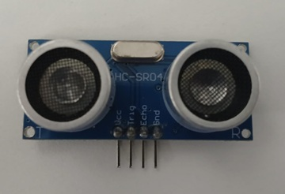
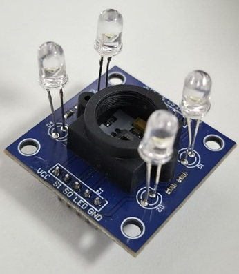
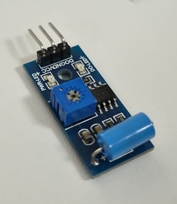
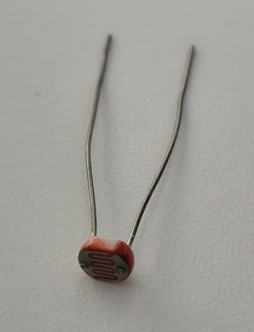
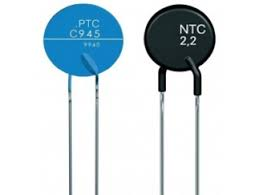
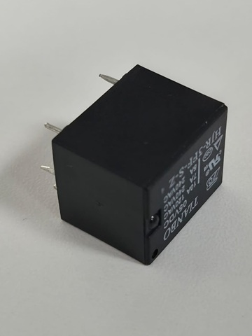
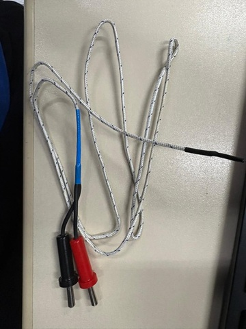
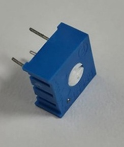

Sensor Ultrassônico
O sensor Ultrassônico é um sensor que detecta e mede a distãncia de objetos através de ondas de altas frequências. Ele emite um som inaudível que percorre o objeto volta. o Calculo da distânica é feito com base no tempo e no eco que leva para retornar.
O sensor contem as entradas: VCC; TRIGGER; ECHO; GND.
VCC é o 5V, o positivo; O TRIGGER é onde sai as ondas; o ECHO é de onde as ondas retornam e é possível fazer o cálculo; O GND é o negativo, o próximo de 0V
O cálculo da distância é:
A velocidade do som é de 340m/s. Logo, você converte de m/s para cm/s, ficando 0,034 cm/s.

Sensor de Cor
O Sensor de cor é um componente elétrico que detecta a cor de uma superfície ou de um objeto. Ele funciona emitindo uma luz branca sobre o objeto e medindo a intensidade da luz refletida através de filtros RGB. A luz é convertida em Sinal elétrico(frequência ou dados digitais), permitindo que o Arduino identifique a cor com base nas proporções de luz captadas.
O sensor de cor contém as entradas: VCC; GND; S0; S1; S; S3.
O VCC é a alimentação positiva(5V); GND é a fonte negativa, próxima dos 0V; S0 e S1 servem pra calcular a escala de frequência da saida o sensor deve enviar a resposta para o arduíno; S2 e S3 define quais cores você quer que o arduino leia

Sensor de vibração
O sensor de vibração é um dispositivo que detecta a movimentação de maquinas, objetos ou estruturas. Ele serve para detectar a frequência e intensidade da vibração, sendo convertida em um sinál elétrico. Ele pode servir para detectar falhas, medir impactos, como segurança e para monitorar as estruturas
O sensor de virbação contem as entradas: VCC; GND; DO; AO;
VCC é a alimentação positiva(5V); GND é a fonte negativo, próxima dos 0V; AO(Analog Output) é o que fornece os dados constantes sobre a intensidade de vibração; DO (Digital Output) é o pino que alterna entre os níveis "ALTO" e "BAIXO" quando há vibração.

Sensor LDR
O sensor LDR é um fotorresistor no qual sua resistência elétrica diminui conforme a intensidade da luz vai aumentando sobre a superfície. Quando está no escuro, sua resistência pode chegar nos milhões de ohmsΩ.
O Sensor LDR possui geralmente 3 pinos: VCC; GND; DO ou AO.
VCC é a alimentação positiva(5V); GND é a fonte negativo, próxima dos 0V;
A fórmula principal para utilizar um sensor LDR (resistor dependente de luz) em circuitos é a do divisor de tensão, que converte a variação de resistência em variação de tensão:
- Vout(Tensão de sáida): Quando o LDR está ligado a um pino analogico. A formula permite fazer a medida da luminosidade
- Vcc: Tensão de alimentação(3.3V ou 5V)
- Rldr: Resistência variável do sensor(baixo com luz, alto no escuro)
- Rfixo: Resistor fixo usando(normalmente o 10kΩ)
A corrente(I) do circuito pode ser calculada usando a fórmula:

Sensor NTC/PTC
O sensor NTC(Negative Temperature Coefficient) é um coeficiente de temperatura negativo. Um termoresistor que serve para fazer a medição da temperatura. Quanto maior a temperatura, menor a resistência.
O sensor PTC(Positive Temperature Coefficient) é um coeficiente de temperatura positiva. Um termoresistor que tambem serve para medir a temperautra. A diferença é que quanto maior a temperatura, maior a resistência
O sensor NTC serve para medir as coisas, então ele pode ser usado quando pra saber quando um freezer chega a -10°C, ou a temperatura do motor de um carro.
O sensor PTC serve como um interruptor que reage ao calor. Se caso algo estiver passando do limite estando muito quente, o sensor aumenta tanto a resistência que a eletricidade quase não passa, protegendo o circuito de queimar

Adaptado de: itech
Atuador Relé
O Atuador é um sensor é um atuador que serve permite um circuito de baixa potência(como o Arduino com 5V) controlar um circuito de alta potência(como um ventilador de 110V /220V).
Quando o Arduino envia 5V para o relé,a bobia de dentro do atuador cria um campo magnético que "puxa" uma alavanca de ferro. Essa alavanca encosta nos circuitos que contem alta tensõ, fazendo eles funcionarem.
No lado do Arduino, oRelé possui as entradas VCC e GND, que são as fontes positivas e negativas do atuador. Além disso, tem o IN, que é onde vai em um pino Digital. Quando o pino está HIGH, ele faz um baruho de click.

Termopar Tipo K
O Termopar Tipo K(Cromel/Alumel) converte energia térmica diretamente em energia elétrica(mV). Para sensores de resistência que exigem alta precisão, como o PT100 ou Células de Carga, pe utilizado o circuito de Ponte de Wheatstone para converter variações de resistência em sinal de tensão. O Termopar Tipo K tem uma faixa: -200°C a +1260°C

Tipos de Termopares
Termopar Tipo J(Ferro/Constantan): Utilizado em indústrias de plásticos, fornos e
moldes.
Faixa: -40°C a +750°C
Termopar Tipo T(Cobre / Constantan): Amplamento utilizado para medições de temperatura
precisa, especialmete em ambientes com temperaturas extremamente baixa.
Faixa:
-270°C
a +400°C
Termopar Tipo E (Cromel/Constantan): Tem altíssima sensibilidade, ideal para detectar
pequenas variações de temperatura, especialmente em baxias temperaturas.
Faixa:
-200°C
a + 900°C
Como selecionar um sensor de temperatura?
Escolher um sensor de temperatura não depende apenas do preço, mas sim da compatibilidade com o ambiente ou o projeto. Por isso é utilizado a escala de temperatura, para ter uma noção de qual sensor apropriado escolher.
Se a temperatura for baixa(-200°C a 0°C), você pode escolher um Termopar tipo T
ou
um PT100.
Se tiver um ambiente com temperatura maior(100°C a 300°C),
você
pode utilizar um termoresistor NTC.
Se o ambiente tiver em altas
temperaturas
(300°C até 1300°C), utilize um Termopar Tipo K.
Trimpot
Um trimpot (potenciômetro de ajuste) é um componente eletrônico usado para ajustar manualmente a resistência em um circuito, permitindo regulagens finas de tensão ou corrente, sendo normalmente utilizado para calibração e ajustes internos em equipamentos eletrônicos.
